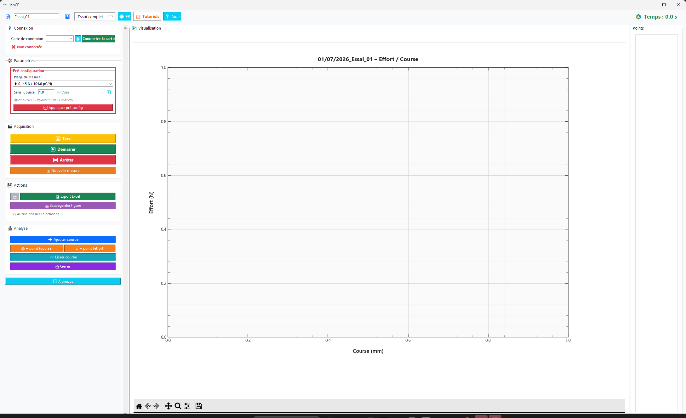

Acquisition
de données
pour bancs
d'essai
labCE est un logiciel professionnel d'acquisition, visualisation et analyse de données mécaniques en temps réel — effort, course, capteurs NI-DAQmx, encodeurs linéaires.

Ce que labCE
fait pour vous
Interface hybride analogique (cellule de charge Kistler ai0) + compteur linéaire (encodeur ASM ctr0) avec décodage X4. Fréquence configurable, correction de zéro automatique.
Courbes Matplotlib temps réel avec curseur d'inspection, zoom/pan/reset, superposition multi-courbes pour comparer plusieurs essais en direct.
Export multi-onglets avec graphiques intégrés, Min/Max/Moyenne/Écart-type par courbe, interpolation de points de référence, comparaison automatique entre essais.
Écran de bienvenue, mise en évidence séquentielle des boutons pour nouveaux utilisateurs, tooltips sur tous les contrôles. Aucune formation préalable requise.
Démarrage automatique en simulation si aucune carte NI n'est détectée. Import Excel/CSV, analyse et export complets disponibles sans matériel.
Déploiement sur plusieurs postes avec configuration par machine : nom du device, canaux, sensibilités, fréquence. Un seul exécutable pour tout le parc.
Équipements
compatibles
Vérification dans NI MAX
Le nom du device (ex. Dev1) doit correspondre à ce qui est affiché dans NI Measurement & Automation Explorer.
L'interface
en détail
Cliquer sur une vue pour l'agrandir. Chaque écran correspond à une étape clé du workflow d'acquisition.
Choisir
votre package
Deux versions selon que NI-DAQmx est déjà installé ou non sur le poste.
Envoyez le lien
sur votre PC
Vous consultez depuis un téléphone ? Partagez le lien du site directement vers votre ordinateur Windows pour lancer le téléchargement.
Collez ce lien dans le navigateur de votre PC pour accéder au téléchargement.
Installer labCE v5.3
Suivez ce guide pas à pas pour installer labCE sur Windows, avec ou sans le driver NI-DAQmx.
Méthode recommandée — 1 double-clic
INSTALLER.bat installe NI-DAQmx, copie labCE et crée le raccourci bureau automatiquement. Prévoir 10 à 30 min.
✅ Vérifier avant de lancer
NI-DAQmx/ présent à côté de INSTALLER.batlabCE_app.exe présent dans le dossier📋 Étapes détaillées
Clic-droit sur labCE_v5.3_Package.zip → "Extraire tout" dans un dossier sans accent ni espace (ex. C:\labCE).
Ne pas lancer depuis le ZIP
Windows bloque les exécutables lancés directement depuis une archive. Extraire d'abord.
labCE_v5.3_Package/
├── labCE_app.exe ← application
├── INSTALLER.bat ← à double-cliquer
├── UPDATE.bat
├── config.ini
├── Logo_LabCE.ico
└── NI-DAQmx/ ← driver NI offline
├── ni-daqmx_25.8.1_offline.iso (3.2 GB)
└── *.nipkgSi une fenêtre UAC apparaît → cliquer Oui. Si rien ne se passe → clic-droit → "Exécuter en tant qu'administrateur".
========================================================
labCE v5.3 - Installation automatique
========================================================
[1/4] Recherche de NI Package Manager...
[OK] nipkg.exe trouvé
[2/4] Vérification NI-DAQmx...
Montage de l'image disque...
Installation NI-DAQmx... (5 à 20 min)
[OK] NI-DAQmx installé avec succès.
[3/4] Installation de labCE...
[OK] Installé dans : %LOCALAPPDATA%\labCE
[4/4] Création du raccourci bureau...
[OK] Raccourci : Bureau\labCE v5.3.lnk
========================================================
Installation terminée !
========================================================Si la console affiche [INFO] Un redémarrage sera nécessaire, redémarrez Windows normalement avant de lancer labCE. Ce n'est pas une erreur.
Le fichier est copié dans %LOCALAPPDATA%\labCE\. Adaptez le nom du device NI à votre poste.
[NI]
device = Dev1 ; nom tel qu'affiché dans NI MAX
has_ni = true ; false = mode simulation
[Channels]
effort_ai = ai0
course_ai = ctr0
[Acquisition]
frequency_hz = 50
[Sensors]
sensitivity_effort_nv = 1.0
sensitivity_course_mmv = 1.0Sans matériel NI ?
labCE démarre automatiquement en mode simulation. Vous pouvez importer des fichiers CSV/Excel et utiliser toutes les fonctions d'analyse.
Installation manuelle
Choisissez cette méthode si INSTALLER.bat échoue, ou si vous préférez utiliser les sources Python.
Exécutable .exe
Sans Python — recommandé
Sources Python
Pour développeurs
# Monter l'ISO et lancer l'installateur
Mount-DiskImage -ImagePath "NI-DAQmx\ni-daqmx_25.8.1_offline.iso"
# Aller dans le lecteur monté (ex. D:\)
D:\Install.exe --passive --accept-eulasmkdir "%LOCALAPPDATA%\labCE"
copy /y labCE_app.exe "%LOCALAPPDATA%\labCE\"
copy /y config.ini "%LOCALAPPDATA%\labCE\"
copy /y Logo_LabCE.ico "%LOCALAPPDATA%\labCE\"Double-cliquez sur %LOCALAPPDATA%\labCE\labCE_app.exe. Si Windows SmartScreen bloque → clic-droit sur l'exe → Propriétés → cocher "Débloquer".
Mise à jour via UPDATE.bat
Seul l'exécutable est remplacé. NI-DAQmx et config.ini ne sont pas touchés.
Cliquer sur le bouton ↓ Télécharger labCE_app.exe dans l'onglet Mises à jour de ce site.
Dossier_maj/
├── labCE_app.exe ← nouvelle version
└── UPDATE.bat ← à double-cliquerLe script ferme automatiquement labCE si ouvert, puis remplace l'exe. Résultat attendu :
[OK] labCE mis a jour avec succes.
Lancez l'application depuis le raccourci sur le bureau.[ERREUR] La copie a échoué
labCE est encore ouvert → Gestionnaire des tâches → fin de tâche labCE_app.exe → relancer UPDATE.bat.
Problèmes fréquents
INSTALLER.bat ou UPDATE.bat doit être dans le même dossier que labCE_app.exe. Ne pas l'exécuter depuis un raccourci ou un autre emplacement.
Normal sans matériel NI — labCE fonctionne en simulation. Si vous avez du matériel :
- Vérifier que NI-DAQmx est installé (Panneau de configuration → Programmes)
- Ouvrir NI MAX — le device doit être visible
- Vérifier le champ
device = Dev1dansconfig.ini - Cliquer "🔄 Rafraîchir" dans labCE
- Redémarrer si NI-DAQmx vient d'être installé
- Clic-droit sur
labCE_app.exe→ Propriétés - En bas → cocher "Débloquer" → OK
- Ou : message SmartScreen → "Informations complémentaires" → "Exécuter quand même"
pip install --upgrade numpy matplotlib openpyxl pillow scipy nidaqmxPas une erreur
Code 3010 = installation réussie, redémarrage requis. Redémarrez Windows normalement. labCE fonctionnera après.
# Application %LOCALAPPDATA%\labCE\labCE_app.exe
# Configuration %LOCALAPPDATA%\labCE\config.ini
# Logs %LOCALAPPDATA%\labCE\labce.log
# Raccourci %USERPROFILE%\Desktop\labCE v5.3.lnktaskkill /f /im labCE_app.exe
rmdir /s /q "%LOCALAPPDATA%\labCE"
del "%USERPROFILE%\Desktop\labCE v5.3.lnk"Mises à jour
labCE
Téléchargez la dernière version, puis lancez UPDATE.bat pour mettre à jour votre installation.
Nouveautés v…
Procédure
en 3 étapes
Zone administrateur
Responsable logicielUne seule action pour publier une mise à jour : créer une Release GitHub. Le site se met à jour automatiquement en moins de 2 minutes.
index.html — Configuration initialeOuvrir index.html, trouver const GH = { owner: '' } tout en haut du script et remplacer '' par votre identifiant GitHub (ex. 'jean-dupont'). À faire une seule fois.
Sur github.com → votre repo → Releases → New release. Tag : v5.4. Écrire les notes en Markdown structuré (voir ci-dessous). Joindre labCE_app.exe en pièce jointe. Cliquer Publish release.
GitHub Actions génère version.json depuis les notes de release et le commite sur main. GitHub Pages redéploie. Le changelog et le bouton de téléchargement se mettent à jour au prochain chargement de la page.
## Nouveautés
- Nouvelle fonctionnalité X
- Mode simulation amélioré
## Corrections
- Correction bug affichage
## Améliorations
- Performance temps réel ×2
→ Sections reconnues : Nouveautés / Corrections / Améliorations
→ Aussi : New / Fix / Improve (anglais)Mettre le site en ligne
gratuitement
Deux options pour héberger cette page sur internet, sans PC allumé en permanence, sans abonnement.
Glisser-déposer le dossier sur la page Netlify → URL publique en 30 secondes. Gratuit, sans compte requis.
Aller sur netlify.com/drop
Glisser le dossier labCE - Copy/ dans la zone
Copier l'URL générée (ex. labce-abc123.netlify.app)
Partager l'URL générée (section "Sur téléphone ?" → Copier)
Limite 100 MB par fichier
Pour le ZIP complet (3.3 GB), héberger sur Google Drive et mettre le lien dans le bouton de téléchargement.
Site sur GitHub Pages + fichiers lourds comme Releases GitHub (jusqu'à 2 GB par fichier). URL stable, mises à jour via push.
Créer un repo sur github.com
Uploader les fichiers HTML/CSS/PNG dans le repo
Settings → Pages → Source: main → URL automatique
Créer une Release → attacher les ZIPs comme assets
Mises à jour 100% automatiques
Publiez une Release GitHub avec labCE_app.exe en pièce jointe → GitHub Actions génère version.json automatiquement → le site affiche la nouvelle version en < 2 min. Zéro manipulation manuelle.